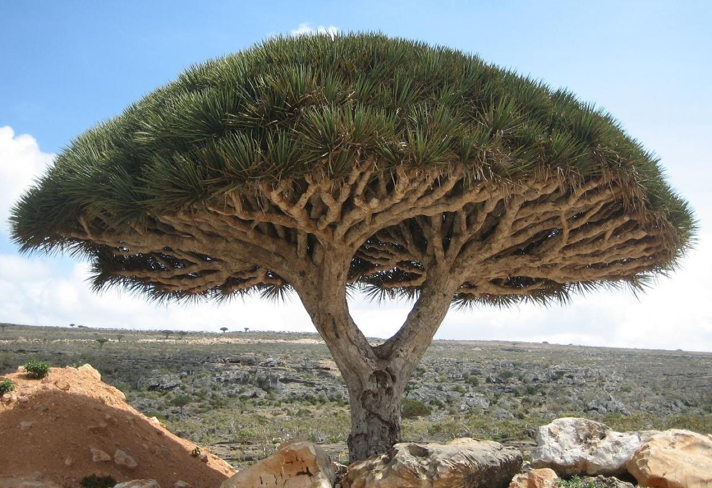

📷 Real Photo
Dracaena cinnabari
VU • Vulnerable
300 – 1,500 m
Dracaena cinnabari Balf.f.
Soqotri: Dam al-Akhawain / A'ariyb
Pachycaul Umbrella Tree
Pohon Payung Pachycaul
Flagship evergreen umbrella tree harvesting orographic mist via dense radiating dichotomous branches. Produces crimson resin rich in dracorubin and biflavonoids used anciently as a medicine, dye, and ritual varnish. Pohon payung hijau abadi khas yang memanen kabut pegunungan lewat percabangan dikotomis rapat. Menghasilkan getah merah darah kaya drakorubin dan biflavonoid untuk obat tradisional, pewarna, dan pernis.